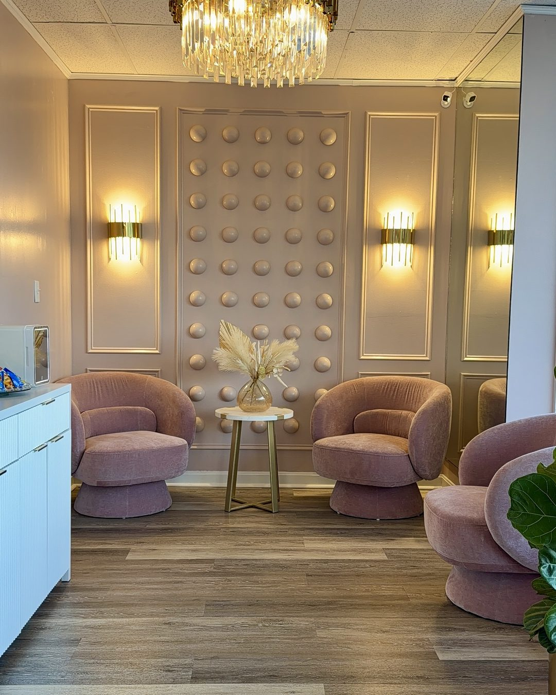

Bottom Eyeliner in Wilmington, MA
Bottom Eyeliner in Wilmington, MA costs $250, the most affordable procedure here, adding a fine line along the lower lash line. It is rarely bold: a heavy line can visually close the eye, so most clients pair it with a top liner. Book at 211 Lowell Street, Suite F.
- 18+
- Years in the industry
- 5,000+
- Procedures performed
- EN & PT
- Consultations
Bottom Eyeliner in Wilmington, MA is a $250 procedure at 211 Lowell Street, Suite F, a fine line rather than a bold one.
How Much Does Bottom Eyeliner Cost in Wilmington, MA, and What’s Included?
Bottom Eyeliner in Wilmington, MA costs $250, a single price that already includes the perfecting session 6 to 8 weeks after the procedure. A separate yearly touch-up, from $300, follows roughly 12 months later. Cherry offers 4 interest-free payments or a longer plan.
| Item | Detail |
|---|---|
| Procedure price | $250 |
| What’s included | Consultation, mapping, numbing, and the procedure itself |
| Perfecting session | Included, 6 to 8 weeks after the procedure |
| Yearly touch-up | From $300, about 12 months later |
| Payment plan | 4 interest-free payments or longer, via Cherry; approval not guaranteed |
Want both lines? The Eyeliner Combo is $500, versus $600 booked separately.
Who Should Book Bottom Eyeliner in Wilmington, MA, and Who Should Not?
Bottom Eyeliner in Wilmington, MA suits clients who already have, or plan to add, a top liner and want a light finishing touch on the lower lash line. Booking it alone is a legitimate but less common choice. It is not for anyone pregnant, breastfeeding, under 18, or currently using isotretinoin.
- Good fit: clients pairing Bottom Eyeliner with a top liner, or wanting subtle lower-lash definition alone
- Legitimate but less common: booking Bottom Eyeliner alone, without a top liner
- Not a fit: a bold, dark lower line — that reads harsh and can visually close the eye
- Not a fit: anyone pregnant, breastfeeding, or under 18
- Not yet: isotretinoin, blood thinners, autoimmune, or keloid history — see the contraindications guide
- Contact lenses come out for the appointment; the studio says how long to leave them out after
- Active eye infection or recent eye surgery: get clearance from an eye doctor first
How Does a Bottom Eyeliner Appointment Work at the Wilmington Studio?
A Wilmington bottom eyeliner appointment is shorter and finer than a top-liner session: consultation, a light lower-lash-line placement under topical numbing, and written aftercare instructions. The perfecting session follows 6 to 8 weeks later, once healing is complete, at no extra charge.
- Consultation and health-history intake, including contact lens removal
- A light lower-lash-line placement, deliberately fine rather than bold
- The procedure, with a sterile single-use needle
- Written aftercare instructions to take home
- Perfecting session, 6 to 8 weeks later, included in the $250
Why Book Bottom Eyeliner at the Wilmington, MA Studio Specifically?
Wilmington’s Board of Health, not a single Massachusetts state license, requires both an establishment permit and an individual practitioner permit naming the type of body art performed, under M.G.L. Chapter 111, Section 31. The studio sits on Route 129, reachable from Reading, Woburn, Burlington, Tewksbury, and Andover within about 10.6 miles.
Lowell Street is Massachusetts Route 129, with highway access at the I-93 interchange. Wilmington also has two MBTA commuter rail stations, on the Lowell and Haverhill lines. Population: 23,336.
| Town | Driving distance |
|---|---|
| Reading, MA | 2.7 mi |
| Woburn, MA | 4.7 mi |
| Burlington, MA | 5.0 mi |
| Tewksbury, MA | 7.2 mi |
| Andover, MA | 10.6 mi |
What Backs the Artist Performing Bottom Eyeliner in Wilmington?
Adriana Souza Santos, the Master Permanent Makeup Artist performing bottom eyeliner at the Wilmington studio, has completed more than 5,000 procedures and trained more than 300 students over an 18-plus year career, holds an AAM Diamond Certified Trainer credential, and consults in both English and Portuguese. A second licensed artist, Livian Camargo Gomes, also performs procedures at the Wilmington studio.

Will Bottom Eyeliner Make My Eyes Look Smaller, and Is an MRI a Concern?
The honest fear about bottom eyeliner is that it will make the eyes look smaller. That is why the work is deliberately fine here: a heavy line on the lower lash line visually closes the eye, so intensity is intentionally restrained, never as bold as a top liner.
The American Academy of Dermatology documents that eyeliner pigment can rarely react during an MRI — burning, tingling, or swelling — and advises telling the technician beforehand; see the aftercare guide.
Frequently Asked Questions About Bottom Eyeliner in Wilmington, MA
Bottom Eyeliner in Wilmington, MA is performed at 211 Lowell Street, Suite F, Wilmington, MA 01887, reached at (781) 853-8063. The studio is open Monday through Saturday, 10 a.m. to 6 p.m., closed Sunday — a different address and phone number than the Salem, NH studio.
Bottom Eyeliner in Wilmington, MA costs $250, and that price already includes the perfecting session 6 to 8 weeks after the procedure. A yearly touch-up, from $300, follows roughly 12 months later. Cherry offers 4 interest-free payments or a longer plan; approval is not guaranteed.
This is the most common concern, and it is why the line is kept fine. A heavy line on the lower lash line can visually close the eye, so the studio deliberately restrains the intensity here — it is designed to add a soft finishing touch, not a bold line, so eyes read defined rather than smaller.
Yes, booking Bottom Eyeliner alone is a legitimate choice, though most clients pair it with Top Eyeliner instead. Alone, it costs $250 and adds subtle lower-lash definition. Paired with Top Eyeliner at $350, the two together cost $600 separately, or $500 as the Eyeliner Combo, saving $100.
Bottom Eyeliner is the most subtle technique on the menu. Unlike Top Eyeliner, which can be built up to a defined line with a tail, the lower lash line intentionally stays fine, since a bold lower line reads harsh and can visually close the eye rather than open it.
Yes. Contact lenses come out for the bottom eyeliner appointment; the studio says how long to leave them out after. Separately, the AAD documents that eyeliner pigment can rarely react during an MRI with burning, tingling, or swelling; tell the technician beforehand and ask them to stop the scan.
Yes. The Wilmington studio offers payment plans for the $250 bottom eyeliner price through Cherry Technologies, an independent lender, not the studio. Options include 4 interest-free payments or a longer plan up to 24 months; approval is not guaranteed; Cherry sets the terms.
Yes. The Eyeliner Combo costs $500 for both the upper and lower lash line in one Wilmington appointment, while Top Eyeliner at $350 plus Bottom Eyeliner at $250 booked separately add up to $600. Clients who want both lines from the start save $100 by booking the combo up front.
Explore Other Eyeliner Styles at the Wilmington Studio
Bottom Eyeliner is one of four eyeliner options at the Wilmington studio, priced $250 to $500 depending on the lash line treated and how much shading is added. Every technique includes the perfecting session, with its own page for Wilmington, MA.
- Top Eyeliner in Wilmington — $350
- Smokey Eyeliner in Wilmington — $400
- Eyeliner Combo in Wilmington — $500
Which Licenses Cover This Work in Wilmington?
Massachusetts has no single state body art license. Wilmington’s own Board of Health issues both licenses that cover this work: Body Art Facility License 20261921 for the studio at 211 Lowell Street, and Body Art Practitioner License 20261923 for the artist. Both run through 31 December 2026.
| License | Number | Issued by | Valid through |
|---|---|---|---|
| Body Art Facility | 20261921 | Wilmington Board of Health | 31 Dec 2026 |
| Body Art Practitioner — Adriana Santos | 20261923 | Wilmington Board of Health | 31 Dec 2026 |
| Body Art Practitioner — Livian Camargo Gomes | 20261923 | Wilmington Board of Health | 31 Dec 2026 |
Under Massachusetts General Laws Chapter 111, Section 31, each town’s Board of Health writes its own body art rules, so a permit issued in Wilmington does not carry over to another Massachusetts town. Both licenses are posted in the studio, as Wilmington requires.
Ready to Book Bottom Eyeliner in Wilmington, MA?
Book online for real-time availability at 211 Lowell Street, Suite F, or call (781) 853-8063 before you commit. Prefer Salem, NH? See that studio’s Bottom Eyeliner page.
Book Now in Wilmington